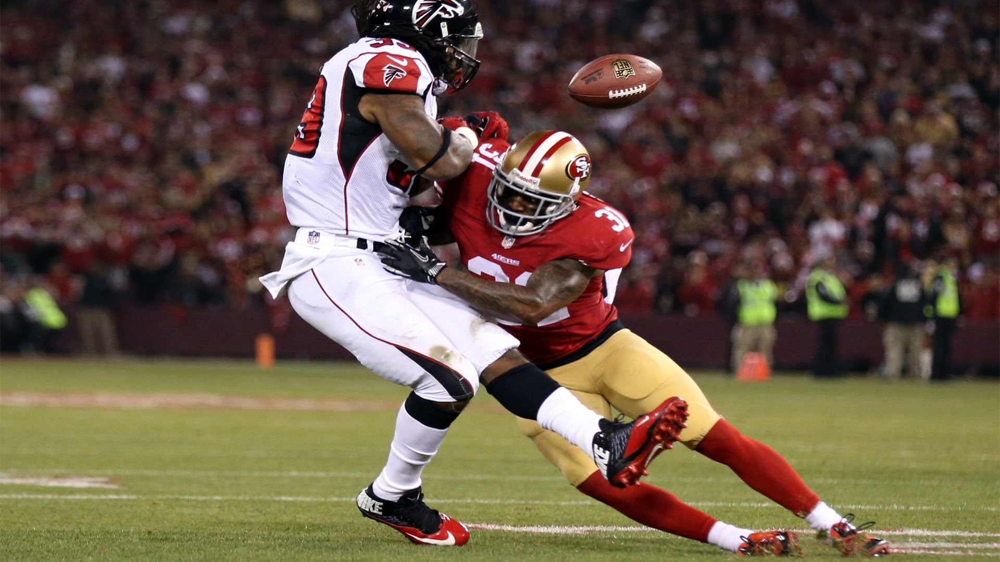

Consideraciones Generales.
Para entender el Futbol Américano, desde un punto de vista europeo, hay que tener en cuenta una serie de consideraciones o pecualiaridades:
-
Se llama Fútbol, pero tiene muy poco que ver con el nuestro. Más allá de que hay una pelota, ovalada, y dos porterías. Pero, éstas últimas, no tienen ni de lejos la misma importancia que las nuestras.
-
Las plantillas de los equipos son mucho más numerosas que las del fútbol europeo. Como puede observarse aquí.
-
Los jugadores en el campo cambian constantemente con el cambio de posesión de la pelota.
-
Sólo se marca entre los palos de la portería en contadas ocasiones, el resto de veces el gol se consigue traspasando una línea.
-
El contacto, los placajes, está ampliamente permitido, no así las agresiones.
-
La mayoría del tiempo la pelota está en manos de los jugadores o en el aire, rara vez toca el suelo.
-
Distintas acciones conllevan una puntuación distinta.
-
No vale lo mismo marcar de falta que atravesar la línea con el balón.
-
Cada jugador tiene una posición y un rol dentro del partido y es muy raro que se salgan del guión.
